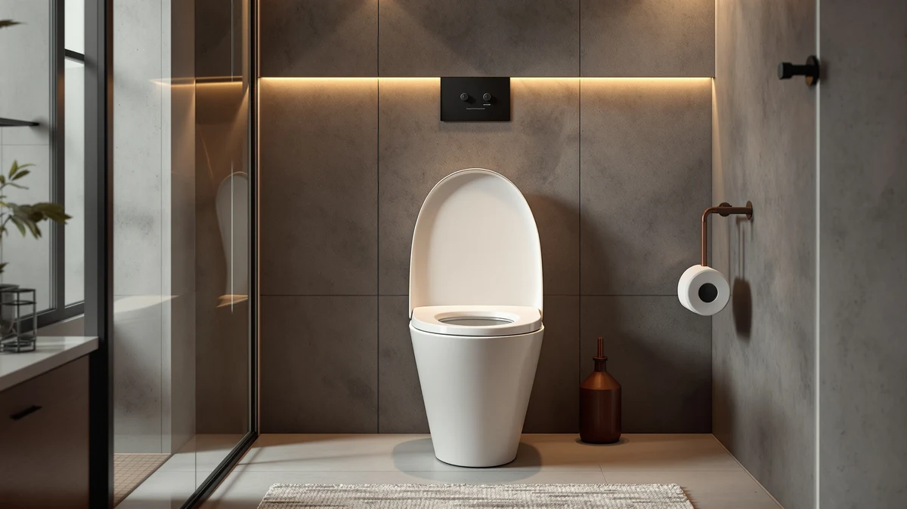

Best Bidet Toilet Seats Under 200 of 2026: 6 Top Picks
Prices and picks verified as of August 2026. Independent, reader-supported reviews.


Quick Answer
The best bidet toilet seat under 200 dollars for most bathrooms is the Electric Heated Bidet Toilet Seat at $169.99 (as of July 2026). It pairs warm-water washing and a heated seat with an LED display that shows your settings in plain numbers, and 565 owners rate it 4.4 out of 5. If you want to spend far less, the SAMODRA Non-Electric Bidet Attachment delivers the core wash for $22.98.
Our pick: Electric Heated Bidet Toilet Seat at $169.99 Check Price on Amazon
Bottom line: our top pick is the Electric Heated Bidet Toilet Seat LED Display at $189.99. The best budget option is the SAMODRA Non-Electric Bidet Attachment at $29.99.
Things to Know Before You Buy
- Electric seats need an outlet. The three electric picks in this guide require a grounded outlet within cord reach of the toilet. Many US bathrooms lack one near the tank, so check yours before you commit to an electric model.
- Non-electric means cold water. The Brondell Ecoseat and both attachments spray at the temperature of your supply line. That feels refreshing in July and sharp in January.
- Bowl shape decides your options. Our top pick, the SmartWhale, and the Brondell fit elongated bowls only. The two attachments fit either shape.
- Attachments cost a fraction of full seats. The SAMODRA at $22.98 mounts under your existing seat, while a full bidet seat replaces it entirely and adds features like heated water and warm seating.
- A bidet toilet seat under $200 covers the essentials. Adjustable pressure, rear and front wash, and on electric models heated water. Pricier seats mostly add remotes and dryers rather than a better clean.
Shopping for the best bidet toilet seat under 200 dollars puts you in the most confusing corner of the category, where $25 attachments, $90 non-electric seats, and $170 electric seats all compete under the same search term. The price differences are not arbitrary. They map to three different product types, and the right one for you depends on your outlet situation, your bowl shape, and how much you care about warm water.
We run Best Toilet Seats as a working catalog of toilet seat research, and bidet seats have become the most requested topic on the site. For this guide we compared six budget bidet products from our vetted database, checked their listings, manuals, and fit requirements against each other, and read owner feedback across more than 37,000 combined reviews to find where each model fails.
The Electric Heated Bidet Toilet Seat won the top spot at $169.99 because it delivers the full electric experience (warm water, heated seat, readable LED controls) with $30 to spare under the cap. The SAMODRA Non-Electric Bidet Attachment took the budget slot at $22.98 on the strength of 25,178 reviews. The four picks between them each serve a specific bathroom, and we explain which below.
Why You Should Trust Us
I'm Ilane Tall, and I research bathroom hardware for Best Toilet Seats, where we maintain guides on more than 40 toilet seat topics, from heated seats to accessibility risers. Bidet seats under $200 sit in the part of the market where marketing outruns substance, so we anchor our picks in things a listing cannot fake: verified pricing, fit specifications, and large bodies of owner reviews read for failure patterns rather than star averages.
We earn a commission when you buy through our links, and that commission stays the same whichever pick you choose. No manufacturer paid for placement in this guide, and we flag the flaws of each product alongside its strengths.
How We Picked
We started from a hard rule: a bidet toilet seat under $200, with pricing verified in July 2026. That cap excluded the premium tier, TOTO washlets and Bio Bidet's flagship seats among them, and left a field of electric seats between $150 and $200, non-electric seats near $90, and attachments under $40.
From there we filtered on three criteria. First, a rating floor of 4.3 out of 5, because budget bidets with lower averages tend to share the same complaints: leaking T-valves and cracked mounting plates. Second, review volume, since a 4.5 average over 200 reviews carries less weight than a 4.4 over 25,000. Third, coverage across the three product types, so this guide answers the budget question whatever your bathroom's wiring and bowl shape allow. Each finalist also had to publish its fit requirements clearly enough that you can confirm compatibility before ordering.
How We Compared
We evaluated each bidet seat under $200 on the factors that decide daily satisfaction: wash coverage and pressure adjustment, install complexity, fit on standard US bowls, and the durability signals buried in owner reviews. For the attachment-style picks, we walked through the full install sequence (seat off, bracket on, T-valve into the supply line) to time the job and catch the steps where listings oversimplify.
For the electric seats, we compared manuals and spec sheets side by side, then read one-star and two-star reviews in bulk to separate one-off shipping damage from repeat design failures. We weighted complaints that appeared across multiple months, like temperature drop during long washes on tank-style heaters, more heavily than isolated reports. Prices and ratings in this guide reflect what we verified in July 2026, and we re-check them on our regular price sweep.
Our Picks

Electric Heated Bidet Toilet Seat
What we like
- Warm water and a heated seat for $169.99
- LED display shows settings in plain numbers
- Sized for elongated bowls without overhang
- 565 owners average 4.4 out of 5
Flaws but not dealbreakers
- Needs a grounded outlet near the toilet
- Elongated bowls only, so measure first
- Settings take a few days to dial in
| Material | Plastic / wood |
| Size | Elongated |
The Electric Heated Bidet Toilet Seat earns the top spot in this guide because it packs the complete electric feature set (warm-water washing, a heated seat, adjustable pressure) into a $169.99 price (as of July 2026) that leaves $30 of headroom under the cap. The LED display is the detail that separates it from other budget electric seats. Temperature and pressure read out in numbers you can check at a glance, instead of the unmarked button rows that force guesswork on cheaper models. Owner sentiment backs the pick: 565 reviews average 4.4 out of 5, a strong showing for an electric seat at this price.
You need two things for a clean install. The first is an elongated bowl, since this seat ships in one shape only; measure from the mounting bolts to the front rim, and if you get about 18.5 inches, you have an elongated bowl. The second is a grounded outlet within cord reach of the tank. If your bathroom lacks one, add an electrician visit to the budget or step down to the Brondell Swash Ecoseat below, which skips electricity entirely. Compared with the SmartWhale, the other elongated electric seat here, this one gives up little and saves you $30.

BATHKITY Electric Bidet Toilet Seat
What we like
- Instant heating holds water temperature through long washes
- Highest rating of the electric picks at 4.5 out of 5
- Costs $10 less than our top pick at $159.98
Flaws but not dealbreakers
- Only 200 reviews, a thin durability record
- Fit spec is vague on the listing, confirm your bowl shape
- Needs an outlet, like all electric seats
| Material | Plastic / wood |
| Size | — |
The BATHKITY Electric Bidet Toilet Seat takes a different approach to warm water. Its instant heating design warms water on demand rather than storing it in a reservoir, which means the spray holds its temperature through longer washes instead of fading to cold after half a minute the way tank-style heaters can. At $159.98 (as of July 2026) it undercuts our top pick by $10, and its 4.5 out of 5 average is the highest rating among the three electric seats in this guide.
The catch sits in the sample size. That 4.5 average comes from 200 reviews, a fraction of the track record behind the Brondell's 10,541 or the SAMODRA's 25,178, so the long-term durability picture is thinner than we would like for a $160 purchase. The listing also leaves fit less explicit than our top pick's, so match your bowl shape against the product page diagrams before ordering. If the rating holds as reviews accumulate, this seat becomes a serious contender for the top spot in a future update of this guide.

SmartWhale Electric Bidet Toilet Seat
What we like
- The most refined electric seat that fits the budget
- Solid 4.4 average across 526 reviews
- Elongated shape matches most modern US toilets
Flaws but not dealbreakers
- At $199.99, one cent from the cap
- A sale on premium seats can erase its value edge
- Elongated bowls only
| Material | Plastic / wood |
| Size | — |
The SmartWhale Electric Bidet Toilet Seat lands one cent under this guide's ceiling at $199.99 (as of July 2026), and it earns its place as the pick for buyers who treat $200 as a target rather than a limit. It carries a 4.4 average over 526 reviews, matching our top pick's rating with a comparable body of feedback behind it, and its elongated shape fits the same modern bowls. Between the two, you pay the extra $30 for a more polished package rather than for a fundamentally different wash.
That pricing is also the argument against it. At $199.99 the SmartWhale competes at the edge of premium territory, where discounted name-brand seats occasionally dip within reach; if you see an established premium model within $40 of it, the calculus changes. On this guide's terms, though, the comparison stays simple: pick the $169.99 seat and keep the difference, or spend to the cap here and get the most refined bidet toilet seat you can buy for under $200.

Brondell Swash Ecoseat Non-Electric Bidet
What we like
- 10,541 reviews, the deepest record of any full seat here
- No electricity required, works on line pressure alone
- Brondell stands behind it with real customer support
- Full seat replacement, not a bolt-under attachment
Flaws but not dealbreakers
- Unheated water, noticeable in winter
- Lowest rating in this guide at 4.3
- Elongated bowls only
| Material | Plastic / wood |
| Size | Elongated |
The Brondell Swash Ecoseat solves the problem that disqualifies electric seats from millions of American bathrooms: no outlet within reach of the toilet. It replaces your existing seat entirely and runs its spray on water line pressure alone, so there is no cord to route and no electrician to call. At $89.98 (as of July 2026), it costs roughly half our top pick, and its 10,541 reviews give it the deepest track record of any full seat in this guide. Brondell also brings something the smaller brands here cannot: an established bidet company with parts and support behind the product.
The 4.3 average, the lowest in this lineup, deserves context. Non-electric seats draw harsher ratings than electric ones because some buyers expect warm water and comfort features the category does not offer. Read the negative reviews and the pattern shows disappointed expectations more often than broken hardware. Go in knowing the spray runs at supply-line temperature, confirm you have an elongated bowl, and this seat delivers years of unpowered service. Our non-electric bidet seat guide covers this category in more depth.

SAMODRA Non-Electric Bidet Attachment
What we like
- 25,178 reviews, the largest record in this guide
- Costs $22.98, about an eighth of our top pick
- Universal fit works on round and elongated bowls
- Keeps your existing seat in place
Flaws but not dealbreakers
- Cold water only
- Raises your seat slightly where it mounts underneath
- No heated seat, dryer, or other electric comforts
| Material | Plastic / wood |
| Size | Universal |
The SAMODRA Non-Electric Bidet Attachment answers the question most budget shoppers really have: can I find out whether I like bidets without spending real money? At $22.98 (as of July 2026), it costs about an eighth of our top pick, and 25,178 reviews averaging 4.4 out of 5 make it the most-vetted product in this guide by a wide margin. Rather than replacing your seat, it bolts underneath the one you own and taps the toilet's supply line through an included T-valve, which also makes it the rare pick here that fits round and elongated bowls alike.
The trade-offs are the category's, not this product's. The spray runs at cold-line temperature, there is no heated seat or dryer, and the mounting plate lifts your existing seat a small amount at the hinge end, which some owners notice for the first week. If you install it and find yourself using it daily, you have learned something worth knowing before a bigger purchase, and many owners simply stop there because the $22.98 attachment already does the essential job.

Dual Nozzle Bidet Toilet Seat
What we like
- Separate rear and front wash nozzles
- Ties for the highest rating here at 4.5 out of 5
- Universal fit on round and elongated bowls
- $35.99 keeps it firmly in impulse territory
Flaws but not dealbreakers
- Cold water only
- 873 reviews, a smaller record than the SAMODRA's
- Smaller brand without Brondell's support network
| Material | Plastic / wood |
| Size | Universal |
The Dual Nozzle Bidet Toilet Seat Attachment justifies its $13 premium over the SAMODRA with one specific upgrade: separate nozzles for rear wash and front feminine wash, each angled for its job instead of one nozzle compromising between them. In households where more than one person uses the bidet, that split matters daily. At $35.99 (as of July 2026), it remains cheap enough to buy on a whim, and its 4.5 out of 5 average across 873 reviews ties the BATHKITY for the best rating in this guide.
Like the SAMODRA, it mounts under your existing seat, fits round and elongated bowls, and sprays at supply-line temperature. The reasons to pick the SAMODRA instead come down to money and evidence: it costs $13.01 less and carries 24,305 more reviews. The reason to pick this one is the second nozzle. If that feature would go unused in your bathroom, save the money; if it would see daily use, the extra $13 buys a meaningful upgrade over any single-nozzle attachment under $200.
Quick Comparison
| Product | Material | Price | Rating | Best for | Get it |
|---|---|---|---|---|---|
| Electric Heated Bidet Toilet Seat | Plastic / wood | $169.99 | 4.4 | Most people upgrading to electric | View on Amazon → |
| BATHKITY Electric Bidet Toilet Seat | Plastic / wood | $159.98 | 4.5 | Steady warm water on demand | View on Amazon → |
| SmartWhale Electric Bidet Toilet Seat | Plastic / wood | $199.99 | 4.4 | Maxing features under $200 | View on Amazon → |
| Brondell Swash Ecoseat Non-Electric Bidet | Plastic / wood | $89.98 | 4.3 | Bathrooms without an outlet | View on Amazon → |
| SAMODRA Non-Electric Bidet Attachment | Plastic / wood | $22.98 | 4.4 | First-time buyers under $25 | View on Amazon → |
| Dual Nozzle Bidet Toilet Seat | Plastic / wood | $35.99 | 4.5 | Dual wash modes on a budget | View on Amazon → |
Do bidet toilet seats under $200 come with heated water?
The electric models do.
Can I install a bidet toilet seat myself?
Yes.
The Competition
We looked at a wider field before settling on the six bidet toilet seats under $200 above. Here is where the rest fell short.
TOTO washlets and other premium electric seats outclass this field on refinement, and they should, since they sell well above this guide's cap. If your budget stretches past $300, our main bidet toilet seat guide covers that tier. Inside a $200 budget, none of them qualified for consideration.
Bio Bidet and ALPHA BIDET's mid-range seats hover close enough to the line that sales occasionally pull them under it. We left them out because their everyday prices exceed $200, and a guide built on sale prices goes stale the week the promotion ends. Check them if you shop during a major sale event.
No-name electric seats between $100 and $150 undercut our electric picks on paper. We passed on them because their review histories run thin, often a few dozen ratings on listings that appeared within the year, and budget electric seats fail at the heating element and seals first. The three electric seats we picked have hundreds of reviews each and ratings that held at 4.4 or better.
Handheld bidet sprayers cost less than any pick here, but they solve a different problem: they wash the bowl and cloth diapers well, and your body awkwardly. A seat or attachment aims a controlled spray from a fixed position, which is the job this guide exists to fill. For non-electric options that mount properly, see our non-electric bidet picks.
Frequently Asked Questions
Do bidet toilet seats under $200 come with heated water?
The electric models do. Our top pick at $169.99, the BATHKITY at $159.98, and the SmartWhale at $199.99 all wash with warm water and include a heated seat. The non-electric options, the Brondell Swash Ecoseat and the two attachments, spray at the temperature of your cold-water line, which feels fine in summer and bracing in January. Our guide to bidet electrical requirements explains what the electric models need from your bathroom.
Can I install a bidet toilet seat myself?
Yes. You unbolt the old seat, bolt on the new one, and route water through a T-valve that connects between the tank and its supply hose. The attachments and non-electric seats in this guide need no wiring at all. Electric seats add one requirement: a grounded outlet within cord reach of the toilet. If your bathroom lacks one, an electrician visit belongs in your budget.
Is a bidet toilet seat under $200 worth buying, or should I spend more?
For most bathrooms, the best bidet toilet seat under 200 dollars covers the features you will use daily: warm water, adjustable pressure, and a heated seat on the electric models. Spending $300 or more buys refinements like remotes and air dryers, not a better wash. We recommend the Electric Heated Bidet Toilet Seat with LED display at $169.99 as the strongest value in the category, and the savings versus toilet paper compound from there, as our cost-savings breakdown shows.